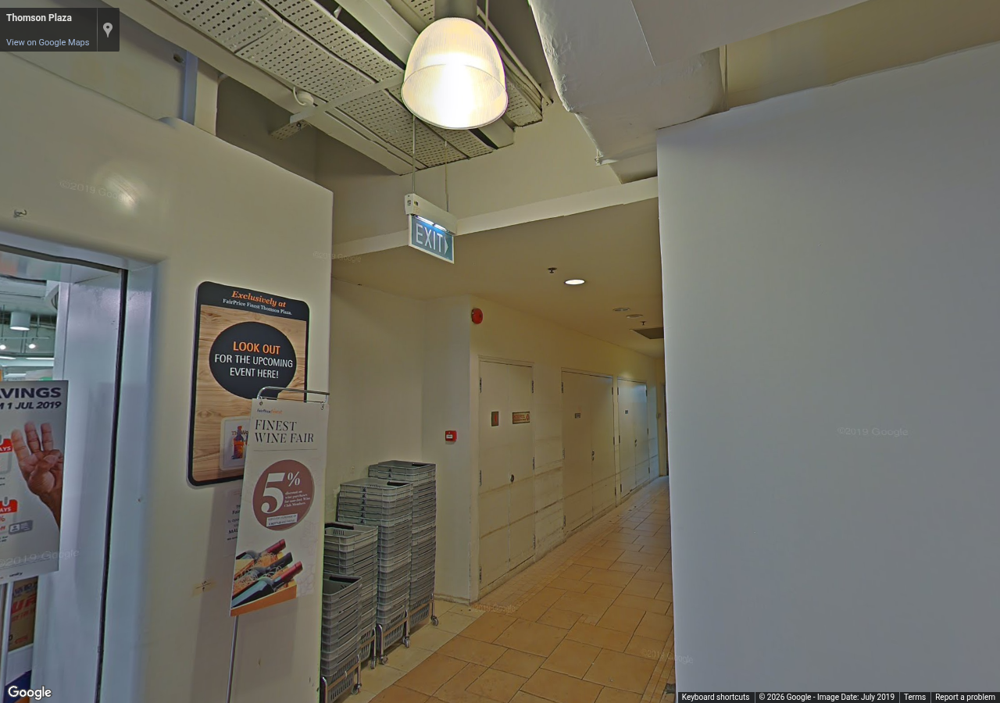
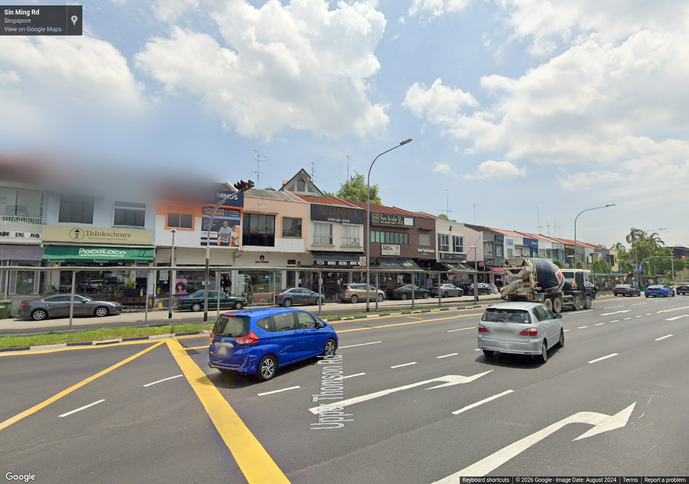

Source 2019-07, heading 280°, pitch 5°, zoom 1. Metadata / review

Source 2024-08, heading 260°, pitch 5°, zoom 1. Metadata / review
Authorized reference screenshots. Attribution retained. Open full-size images to review clarity; capture success alone is not visual acceptance.

